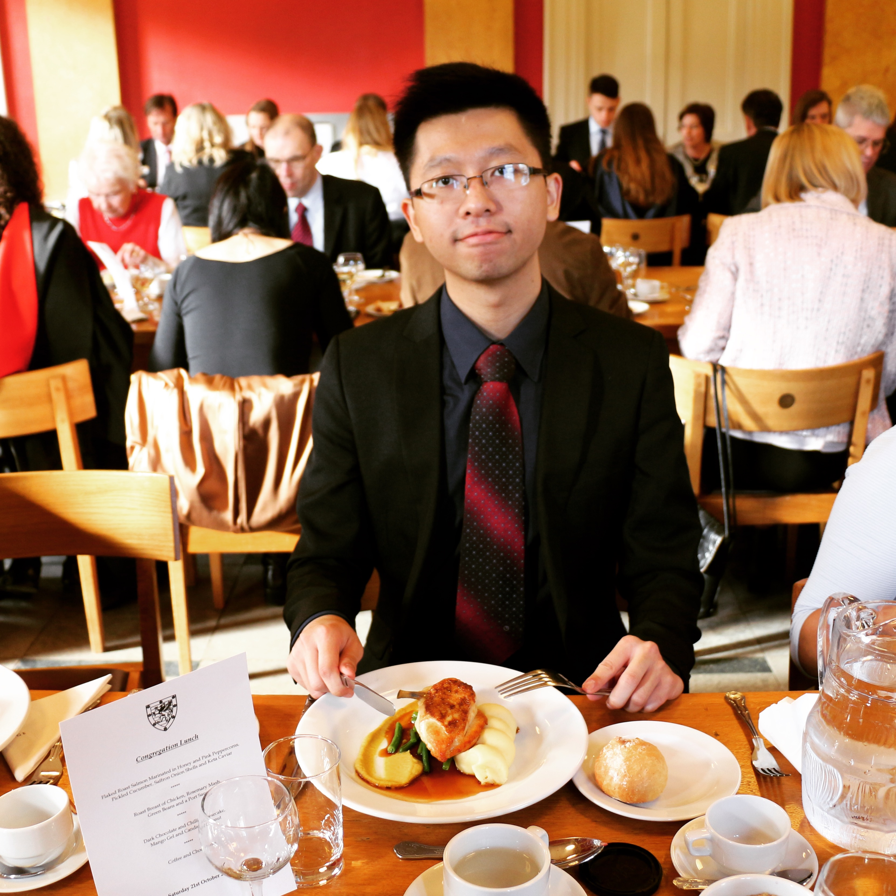
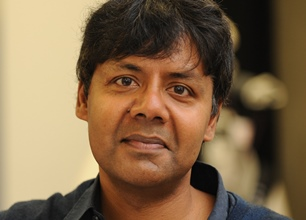
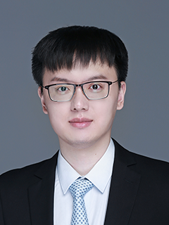
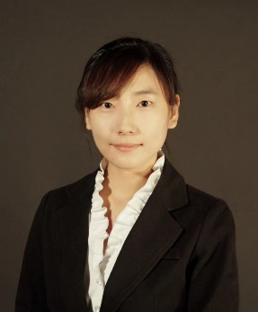

About the Symposium
As robotics and artificial intelligence continue to merge, interdisciplinary research is driving transformative advancements in healthcare, industry, aerospace, and beyond. The 2025 Mohism Symposium will spotlight cutting-edge progress in robotics, machine learning, computational neuroscience, and cross-domain applications. We are honored to host internationally and nationally renowned scholars who will share their latest findings. The event aims to foster a multidisciplinary exchange of ideas and to explore current challenges and future directions in intelligent systems.
Host & Organizer

Host Institution: Mohism Lab, University of Macau
Organizer: Prof. Qingbiao Li
Position: Assistant Professor at University of Macau.
Research: Machine Learning-based Motion Control; Healthcare Imaging/Intelligent Agent; Surgical Robotics and Medical Systems; Multi-Robot Systems.
Invited Speakers

Prof. Sethu Vijayakumar
Position: Fellow of the Royal Society of Edinburgh; Turing Fellow; Professor of Robotics & Computation, University of Edinburgh; Director of CRAS.
Research: Robotics control (e.g., NASA Valkyrie robot), statistical machine learning, computational neuroscience for motor control, and embodied intelligence in space/industrial applications.
Prof. Yun Gu
Position: Associate Professor at Shanghai Jiao Tong University's Department of Automation.
Research: Medical image analysis (e.g., lung airway segmentation), computer-assisted surgery, surgical robot visual navigation for precision medicine.
Dr. Chongjing Cao
Position: Researcher at Shenzhen Institutes of Advanced Technology, CAS.
Research: Soft robotics design, dielectric elastomer actuation, nonlinear dynamics, and rehabilitation robotics (published in Advanced Intelligent Systems).

Prof. Hao Dong
Position: Assistant Professor at Peking University; Director of PKU-Agibot Lab.
Research: Embodied AI, large-model-driven robotic manipulation, reinforcement learning, computer vision (leading open-source projects like TensorLayer, OpenMLsys).

Prof. Shanghang Zhang
Position: Assistant Professor, PhD Supervisor at Peking University's School of Computer Science.
Research: Open-world generalizable machine learning, brain-inspired visual perception, AI-driven scientific computing (published in top AI conferences/journals like NeurIPS).
Preliminary Schedule
- 08:30 - 09:00 | Registration & Welcome Coffee
- 09:00 - 09:10 | Opening Remarks
- 09:10 - 09:50 | Keynote Talk 1
- 09:50 - 10:30 | Keynote Talk 2
- 10:30 - 10:50 | Tea Break
- 10:50 - 11:30 | Keynote Talk 3
- 11:30 - 12:10 | Keynote Talk 4
- 12:10 - 12:30 | Panel Discussion